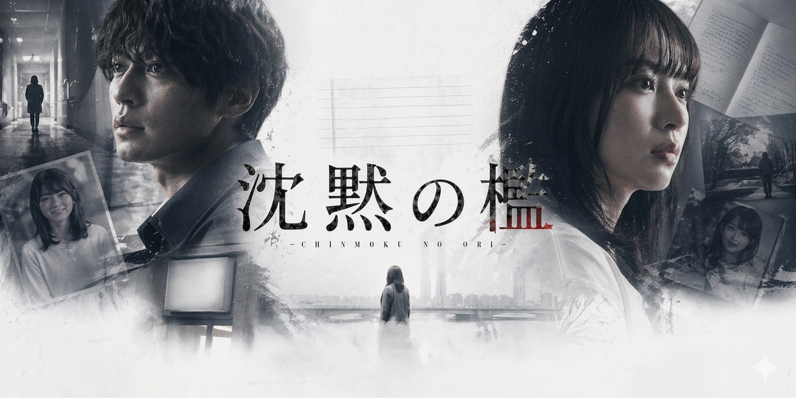
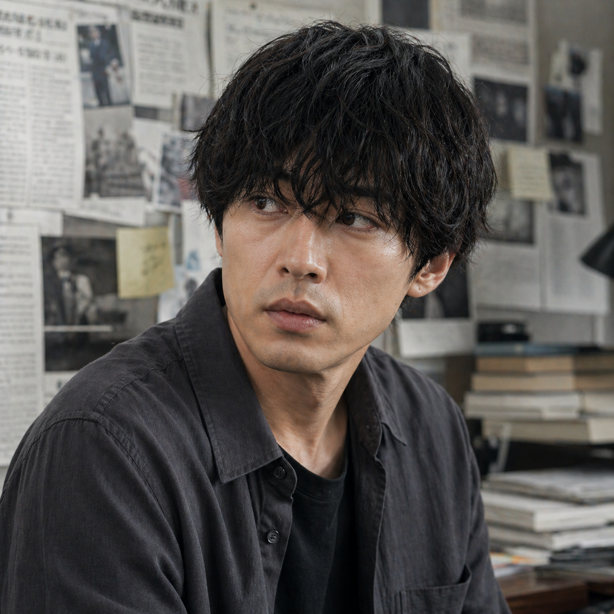
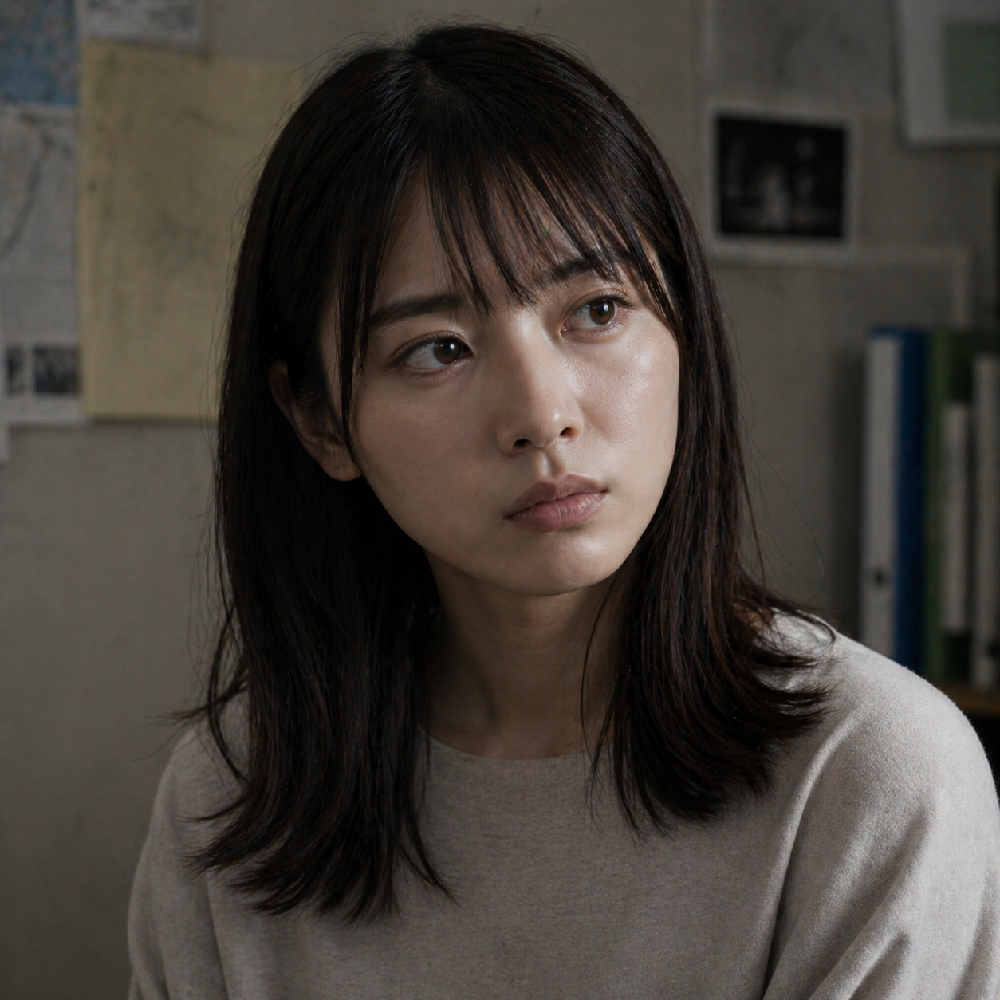
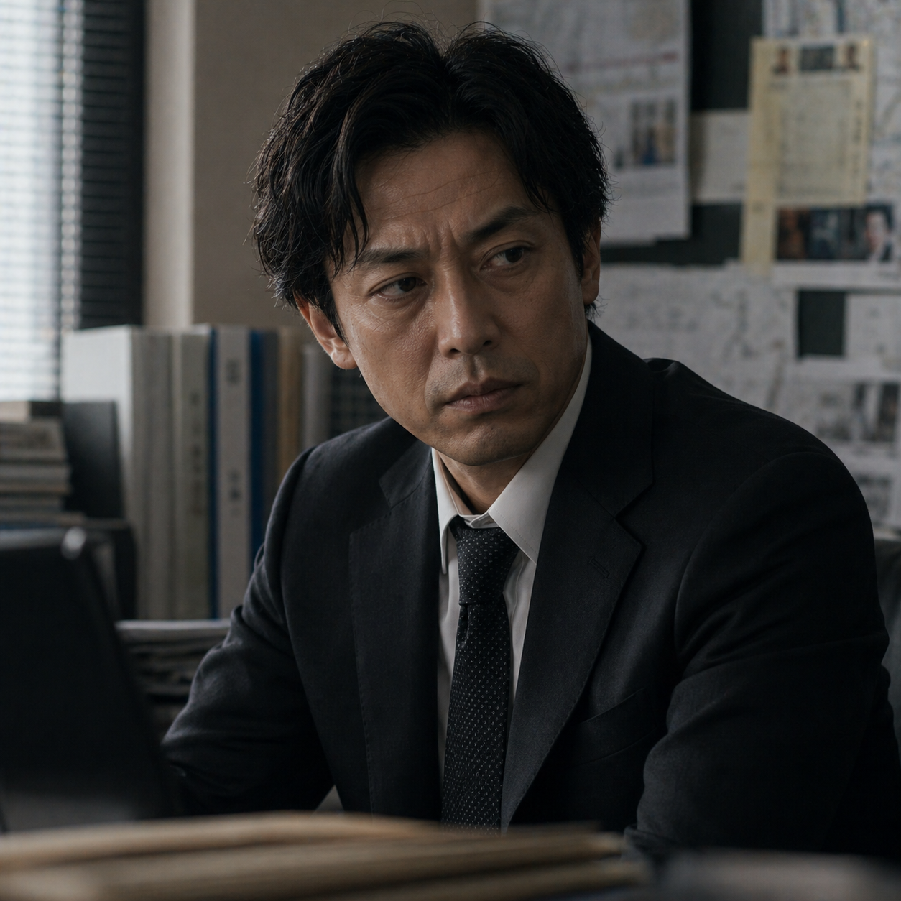
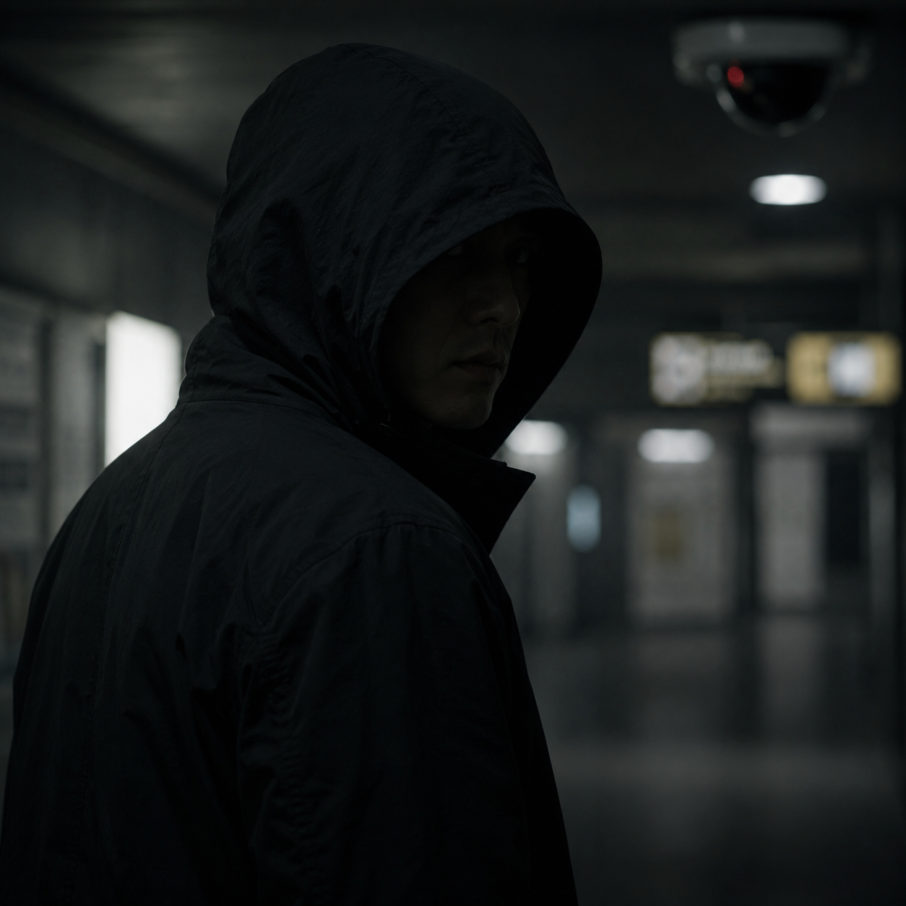

キャスト

過去にある“誤報事件”で信用を失った元新聞記者 失踪事件を独自に追う 真実を求めているが、「事実を歪めた過去」がある

姉の失踪事件を追い続けている
表向きは被害者家族だが、何かを隠している
神崎に協力するが、時折不可解な言動

事件の担当刑事
神崎の過去を知っており、信用していない
捜査情報を隠している様子
美咲の姉 失踪前、ある施設に関わっていた 日記の一部だけが見つかる
失踪前の慶子の担当医 患者の守秘義務を理由に多くを語らない 神崎に対して妙に協力的

監視カメラに何度も映り込む人物
複数の証言に登場するが正体不明
存在自体が曖昧
スタッフ
監督：高瀬 亮介（たかせ りょうすけ）
1983年生まれ。東京都出身。
映像制作会社でCMやミュージックビデオの演出を手掛けた後、短編映画『残響』で注目を集める。人間の記憶や認識の曖昧さをテーマにした作品を得意とし、静かな映像表現と緻密な心理描写で高い評価を受ける。
本作『沈黙の檻』では、「真実とは何か」という普遍的な問いを軸に、失踪事件の謎と人々の記憶が交錯するサスペンスを描いた。観る者自身が登場人物の証言を疑いながら物語を追体験する構成となっている。
主な作品
・『残響』（2015）
・『白昼の境界線』（2018）
・『忘却の部屋』（2021）
・『沈黙の檻』（2026）
ニュース